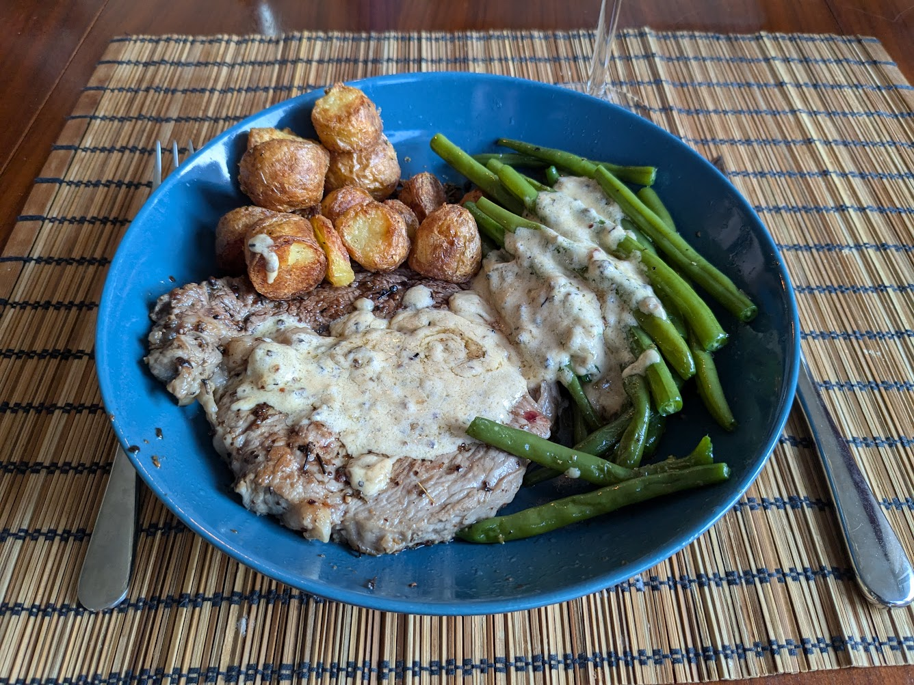

Patates au four divines

Ici avec un steak flambé au poivre et des haricots verts
Pour 3 personnes :
- Un kilo de patates, par exemple des pommes de terre nouvelles
- 40g de graisse d'oie ou de canard (ou, pour une version végé, d'huile d'olive)
- Quelques branches de romarin
- Deux gousses d'ail
- Une demi-cuillère à café de bicarbonate de soude
- (Facultatif) Un peu de persil frais
- Sel, poivre
- Laver les patates et les couper en morceaux de la taille de grosses noix. Mieux vaut que les morceaux soient un peu trop gros que trop petits. On peut laisser les patates entières si elles sont suffisamment petites.
- Faire bouillir 2L d'eau avec deux cuillères à soupe de sel et le bicarbonate de soude. Ajouter les patates, mélanger, attendre que ça bouille, et baisser le feu pour que ça mijote. Cuire environ 10 minutes après que ça recommence à bouillir, jusqu'à ce qu'un couteau planté dans la patate ne rencontre pas trop de résistance.
- Pendant ce temps, laver et émincer les feuilles de romarin, éplucher et émincer l'ail, et faire revenir le tout dans la graisse d'oie dans une poêle jusqu'à ce que l'ail commence à devenir jaune-brun.
- Passer le tout par un filtre pour séparer le mélange romarin-ail et la graisse fondue. Faire préchauffer le four à 210°C à chaleur tournante.
- Faire égoutter les patates et les laisser reposer une minute ou deux sans couvercle. Les mélanger dans un saladier avec la graisse fondue, saler, poivrer, recouvrir le saladier hermétiquement, et secouer énergiquement. Il faut qu'une couche de purée grasse se forme autour de chaque morceau de patate.
- Disposer les patates sur une plaque de cuisson sans qu'elles se touchent. Enfourner une petite heure, en grattant le fond avec une spatule en métal et en secouant les patates tous les quarts d'heure pour éviter que ça attache.
- Pendant ce temps, laver et émincer le persil. Lorsque les patates sont brunes, goûter, saler et poivrer si besoin, et mélanger avec le persil émincé et le mélane ail-romarin. Servir immédiatement.
Retour à la liste des recettes